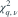
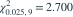
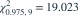
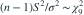

来自正态总体的样本量为 10，无偏样本方差为 4。记

为累积分布概率为 q 的分位数，给定
，
。总体方差的双侧 95% 置信区间约为哪项？- A
- B
- C
- D
我已思考，展开答案与解析
正确答案：B
- 枢轴量

。 - 对不等式取倒数并整理，区间为 。
易错提醒较大的卡方分位数在区间下端的分母中，不能颠倒。
原模拟卷 A · 模拟卷 A 第 32 题
原创

为累积分布概率为 q 的分位数，给定
，
。总体方差的双侧 95% 置信区间约为哪项？
。原模拟卷 A · 模拟卷 A 第 32 题
原创